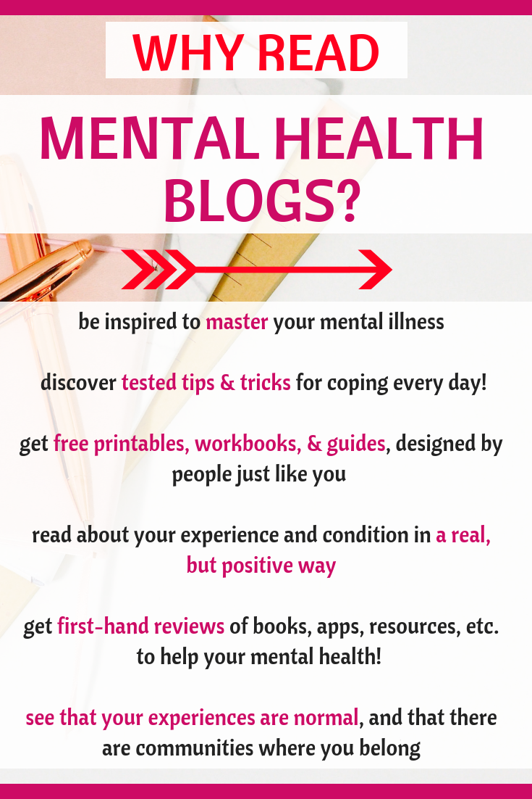

Supportive Blogs
PsychCentral
Psych Central's blog covers a wide range of topics related to mental health, psychology, and wellness. It includes informative blogs on managing stress, anxiety, depression, relationships, and personal growth. The blog also features advice from mental health professionals and provides resources for coping with various psychological challenges.
Mind
The Mind blog shares personal stories and experiences related to mental health, offering insights into living with conditions like depression, anxiety, and bipolar disorder. It also features advice and tips for coping with mental health struggles, aiming to reduce stigma and raise awareness.
NAMI
NAMI (National Alliance on Mental Illness) blog focuses on raising awareness about mental health issues. It offers personal stories, updates on mental health advocacy, and insights into various mental health conditions and their treatments. The blog also provides information on NAMI’s initiatives and resources for individuals and families affected by mental illness.
MightHealth
The Mighty Health blog focuses on promoting well-being for individuals, particularly older adults, through a mix of fitness, nutrition, and mental health tips. It offers advice on exercise, healthy aging, and managing chronic conditions. The blog features articles and stories that aim to empower readers to take charge of their health and lead a more active lifestyle.
